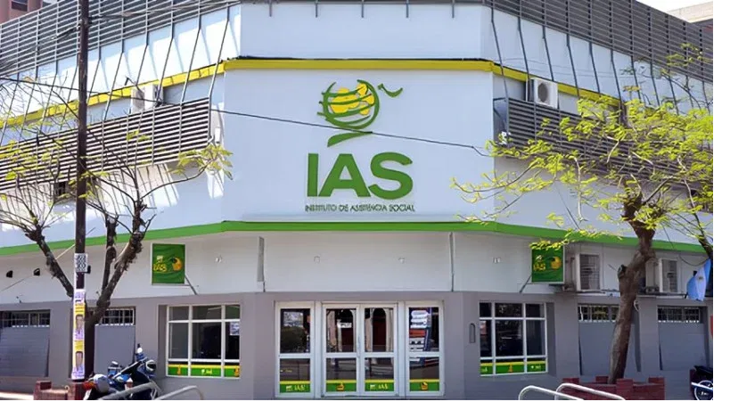

Bienvenida

El Instituto de Asistencia Social (IAS) de Formosa es un organismo público provincial que regula, administra y fiscaliza los juegos de azar y apuestas en la provincia. Su objetivo es maximizar utilidades mediante una gestión transparente, destinando los fondos recaudados a la acción social, educación y cultura en la región.